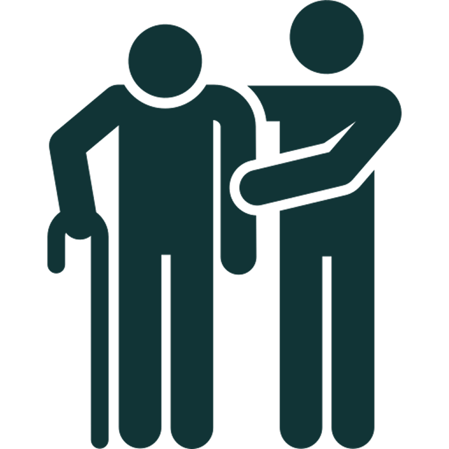

Por que a fisioterapia em casa é uma escolha inteligente e afetiva
Mais conforto, segurança e dedicação — quem recebe percebe a diferença.
[Veja a comparação com as clínicas.]

Cuidado individualizado
Sessões presenciais com foco total na pessoa atendida, o que acelera a recuperação com menos sessões.
Os equipamentos vão até você
Levo comigo os itens necessários para o tratamento. Na maioria dos casos, não é preciso nenhum aparelho especial em casa.
Mais segurança para você
Em situações delicadas, a experiência é fundamental. Com mais de 20 anos de atuação em Unidades de Terapia Intensiva (UTI), ofereço um cuidado técnico, atento e humano